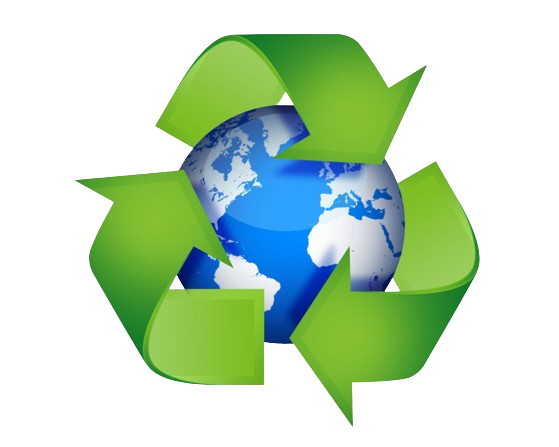
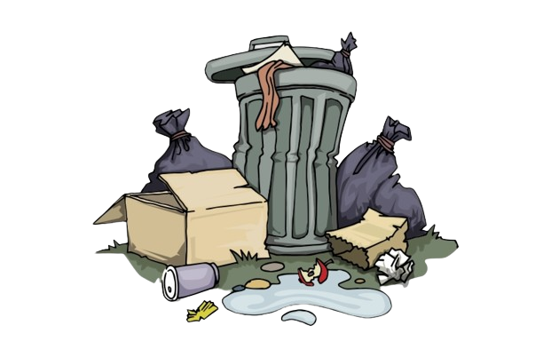
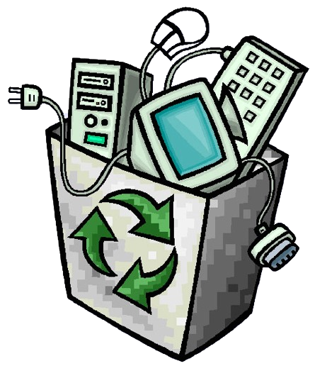
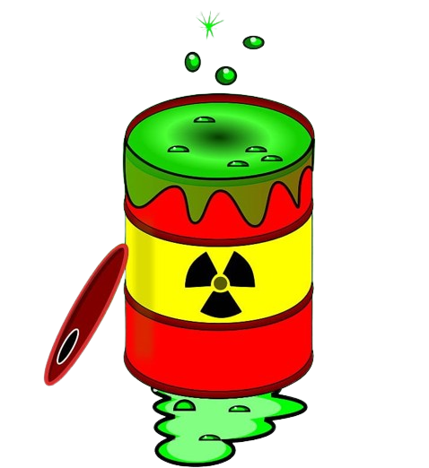
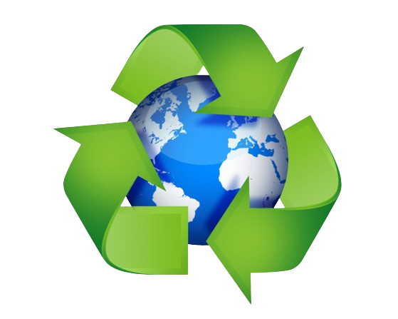
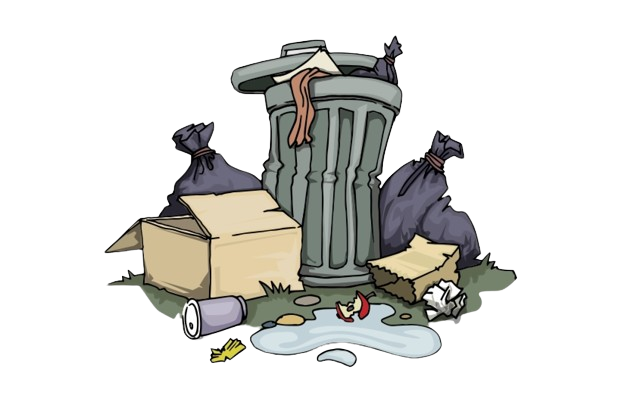
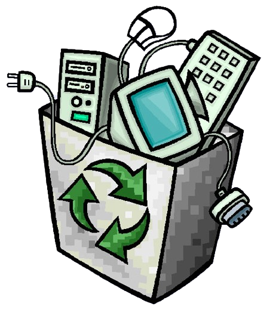
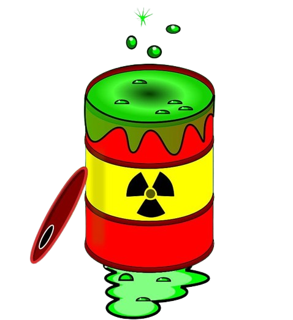

Types of waste bins
Compostable Waste
Compostable waste includes organic materials like kitchen scraps and yard waste.
These items break down into nutrient-rich compost, contributing to soil health and reducing landfill waste.
Composting is an eco-friendly way to recycle biodegradable materials.
Recyclable Trash
Recyclable waste consists of materials like paper, cardboard, glass, plastic,
and metal that can be reprocessed to create new products. Recycling reduces resource
consumption and environmental impact, promoting a circular economy.
Non-Recyclable Trash
Non-recyclable trash encompasses materials that cannot be processed or recycled efficiently.
Proper disposal of non-recyclable trash is crucial to prevent environmental pollution and health hazards.
Electronic Waste (E-Waste)
E-waste comprises discarded electronic devices like computers, smartphones, and appliances.
Responsible recycling of e-waste helps recover valuable metals while preventing
environmental pollution and health risks.
Harzadous Waste
Hazardous waste includes materials that pose a threat to human health or the environment
due to their toxic, flammable, corrosive, or reactive nature. Proper handling, treatment,
and disposal of hazardous waste are essential to prevent contamination and protect ecosystems.
 






